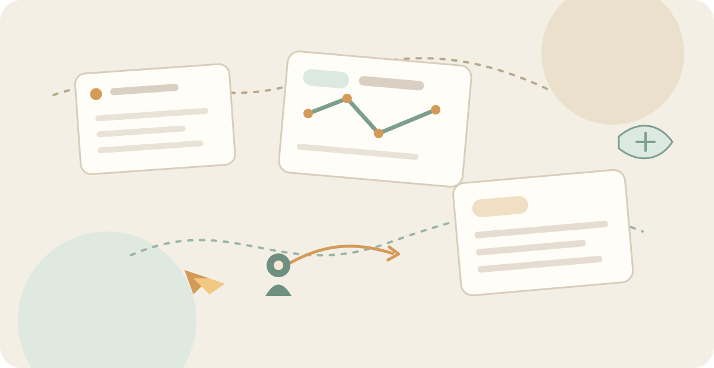

AIが来たから、
始めたわけではない。
この問題集を作り始めた理由は、もっと前にあります。
仕事の中で「もう少し練習できたら」と思ったことを、気軽に試せる場所がほしかった。
AIがコードを書けるようになった今も、読む・考える・整理する・伝えることは、人間の仕事として残ります。
AIに聞く前に、ひと呼吸。
答えを出してもらうことより、出てきた答えをどう扱うか。その土台は、案外昔から変わっていません。
読む考える疑う伝える
読む。考える。整理する。伝える。
仕事の「ちょっとうまくいかない」を、5分から。

自分の仕事で手一杯。それでも、2年目・3年目になると後輩を見る。
先輩は片手間。後輩は指示待ち。「言われたことをやる。終わったら、また指示を待つ。」それだけでは、仕事の中に学びが残りにくい。
だから、教える側だけに「育成」を背負わせない。教わる側だけにも「勉強」を押しつけない。
仕事の中にある小さな「？」を、そのままにしない。読む、考える、伝える。気になった入口から、5分だけ。
気になるものからどうぞ。先輩と一緒でも、一人でも、AIと一緒でも。
AIが作った成果物を、そのまま受け取らずに読み、考え、レビューする。
文章を読み、情報を整理して「伝わる図」にする。
文章の中にある「向き」や視点の違いを見つける。
現象から原因を推測し、切り分けて考える。
IT現場のちょっと香ばしい文面を題材に、日本語を鍛える。
相手を観察し、伝え方や次の一手を考える。
この問題集を作り始めた理由は、もっと前にあります。
仕事の中で「もう少し練習できたら」と思ったことを、気軽に試せる場所がほしかった。
AIがコードを書けるようになった今も、読む・考える・整理する・伝えることは、人間の仕事として残ります。
答えを出してもらうことより、出てきた答えをどう扱うか。その土台は、案外昔から変わっていません。
正解を覚えるためではなく、話すきっかけとして使ってください。
仕事の合間に、気になった問題を一つだけ。
新人だけに解かせず、先輩も一緒に考えてみる。
先に答えを聞くのではなく、自分の考えと比べてみる。